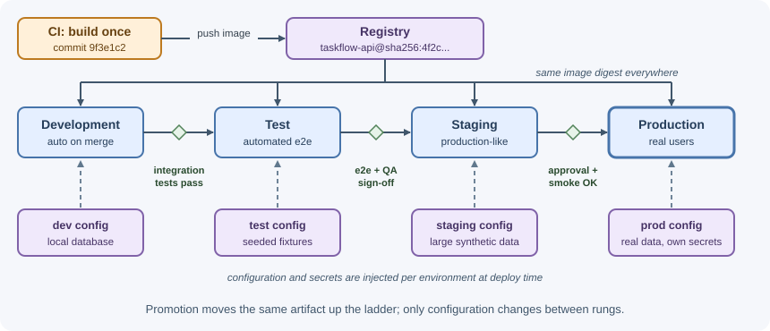

Environments and Promotion¶
An environment is a complete, running copy of a system (code, configuration, data, and the infrastructure around them) used for one purpose: developing, testing, rehearsing a release, or serving real users. Promotion is the act of moving a tested build from one environment to the next until it reaches production.
This lesson covers the usual environment ladder, why environments drift apart and how to keep them close, per-pull-request preview environments, the difference between deploying and releasing, approvals and gates, rules for test and production data, and how configuration differs per environment while the artifact stays the same.
Why it matters¶
Most production incidents caused by a change share one story: the change behaved differently in production than it did where it was tested. The database was larger, a setting was different, the cache was shared, the third-party API returned a real error instead of a sandbox success. A well-designed set of environments exists to find those differences before users do. A badly designed one gives false confidence: a staging environment that nobody trusts, an artifact rebuilt for production that was never tested, or a test database that is really a copy of customer data and therefore a privacy breach waiting to happen.
Promotion rules also decide how fast a team can ship. Every gate costs time. Automated gates are cheap and consistent; manual approvals are slow and tend to batch many changes into one risky release. Choosing which checks run where is part of designing the delivery pipeline.
Real-world usage¶
- Twelve-Factor App (dev/prod parity). Factor X of The Twelve-Factor App names three gaps between development and production: the time gap (code waits days or weeks before deploy), the personnel gap (developers write, operators deploy), and the tools gap (for example SQLite locally and PostgreSQL in production). It recommends keeping all three small, including using the same type and version of backing services everywhere.
- Slack. The post Deploys at Slack describes a ladder in practice: each release goes to staging (no public traffic, automated smoke tests plus manual checks), then to "dogfood" hosts serving internal workspaces, then to a canary receiving about 2% of production traffic, and then to 10%, 25%, 50%, 75%, and 100% of production while charts and alerts are watched.
- Heroku Pipelines. The Heroku Pipelines documentation describes promotion as copying the exact build (the slug) that ran in staging to production, instead of rebuilding it: the "build once, promote the same artifact" rule built into a platform.
- GitHub environments. The GitHub Actions documentation on managing environments for deployment shows the gates most teams use: required reviewers, wait timers, restrictions on which branches may deploy, and secrets that only jobs targeting that environment can read.
Popular tools and providers: GitHub Actions and GitLab CI/CD environments, Argo CD and Flux (promotion by pull request), Vercel, Netlify, and Cloudflare Pages (preview deployments), Heroku Pipelines, Octopus Deploy, Spinnaker, and Kubernetes namespaces with Helm for ephemeral environments.
How it works¶
The usual environments¶
| Environment | Purpose | Who uses it | Data | How code arrives |
|---|---|---|---|---|
| Local | Write and debug code | One developer | Small seeded fixtures | Running from source |
| CI (ephemeral) | Unit and integration tests | The pipeline | Created per run, then discarded | Every push |
| Preview (per PR) | Review a change running for real | Reviewers, designers, QA | Synthetic, seeded per preview | Every push to a pull request |
| Development (shared) | Integrate merged work early | The team | Seeded, can be reset any time | Automatically on merge to main |
| Test / QA | Automated end-to-end and exploratory tests | QA and the pipeline | Fixtures known to the tests | Promoted after integration tests pass |
| Staging (pre-production) | Rehearse the production release | Release owners | Production-like volume, never raw customer data | Promoted after end-to-end tests pass |
| Production | Serve real users | Customers | Real data | Promoted after approval and checks |
Not every team needs all of these. A small product can work well with local, CI, preview, and production. What matters is that each environment answers a question the others cannot: preview answers "does this change work and look right?", staging answers "will this exact release work with production-like configuration, scale, and migrations?".
Build once, promote the same artifact¶
The single most important promotion rule: build the artifact once and
deploy that exact artifact to every environment. For a container this
means the image is identified by its digest (sha256:...), not rebuilt
per environment and not referred to by a mutable tag like latest.

Rebuilding per environment breaks the chain of evidence. A second
npm install can resolve a different dependency version, a base image tag
can point to a newer image, and build-time variables can differ. What
reaches production would then be an artifact nobody tested. Twelve-Factor
calls this separation build, release, run: the build produces an
artifact, the release combines it with one environment's configuration,
and the run stage executes it.
What changes between environments is configuration: URLs, credentials, log levels, replica counts, feature flag defaults. That is why configuration must live outside the artifact (see configuration fundamentals).
Environment parity and where it breaks¶
Parity means environments differ only where they must. In practice they drift in predictable places:
| Aspect | Typical gap | What goes wrong | How to close it |
|---|---|---|---|
| Backing service versions | MongoDB 6 locally, 8 in production | Query or index behaves differently | Pin the same versions in Docker Compose and infrastructure code |
| Topology | Standalone database locally, replica set in production | Multi-document transactions need a replica set, so code paths differ | Run a single-node replica set locally |
| Data volume | 50 tasks locally, 40 million in production | A query without an index is fast in test, times out in production | Load-test staging with production-sized synthetic data |
| Scale | One instance in staging, many in production | In-memory sessions or caches "work" until there are two instances | Run at least two instances everywhere above local |
| Third parties | Sandbox payment and email APIs | Real errors, rate limits, and latency never seen | Contract tests, fault injection, sandbox error simulation |
| Edge | No CDN or TLS in test | Caching headers, redirects, and cookies behave differently | Put the same proxy or CDN configuration in front of staging |
| Configuration | Hand-edited values per environment | A setting exists only in production | Keep configuration in version control and validate it at startup |
| Flags | Feature flags on in staging, off in production | Staging tests a combination users never see | Test the production flag state too |
Perfect parity is impossible and expensive (a full copy of production data and scale for every environment). Aim for parity in the kinds of things (same software, same topology, same configuration shape) and accept differences in size.
Preview environments per pull request¶
A preview (ephemeral, review) environment is a short-lived copy of the application created for one pull request and destroyed when it closes. Reviewers click a link and test the change running for real, instead of reading a diff and imagining it.
![Diagram: a developer opens pull request 123; CI builds an image tagged with the commit SHA, deploys it to its own namespace pr-123, seeds synthetic users, and comments the preview link on the pull request; every new push rebuilds and redeploys the same preview while reviewers test it; when the pull request is merged or closed a webhook triggers destruction of the namespace, database, and DNS record so cost returns to zero, and a scheduled TTL reaper deletes any preview idle more than 72 hours in case the close event was missed.](../preview-environment-lifecycle.svg)
Design points:
- Isolation: each preview gets its own namespace (or app), hostname, and database. Previews must never share a writable database with each other or with staging.
- Data: seed synthetic data at creation so every preview starts in a known state.
- Secrets: previews get sandbox credentials only. Pull requests from
forks must not receive secrets at all; GitHub does not pass secrets to
pull_requestworkflows triggered from forks for this reason. - Access: previews are not public by default. Put them behind single
sign-on or a shared password, and add
noindexheaders so search engines do not index half-finished work. - Callbacks: OAuth redirect URIs and webhook endpoints often require exact URLs. Use a fixed callback host that routes to the right preview, or test those flows in staging.
- Cost: a preview costs money while it exists, so teardown is part of the design, not an afterthought.
Worked example: previews cost about $0.06 per hour each (API plus a small
database). The team opens 40 pull requests a week and each stays open for
3 days on average. By Little's law the average number running is arrival
rate times lifetime: 40 / 7 per day × 3 days ≈ 17 previews, or
17 × 0.06 × 730 h ≈ $745 a month. If 10% of close events are missed and
nothing reaps them, 4 orphaned previews accumulate every week; after six
months there are about 100 of them costing 100 × 0.06 × 730 ≈ $4,380 a
month, more than everything else combined. The TTL reaper exists for that
reason.
Deploy versus release¶
| Deploy | Release | |
|---|---|---|
| What it is | Installing a new version of the code in an environment | Exposing new behavior to users |
| Who triggers it | The pipeline | A product decision (flag change, schedule) |
| Risk it carries | Technical: crashes, latency, resource use | Product: wrong behavior, confused users, business impact |
| How it is undone | Roll back the artifact | Turn the flag off |
When the two are coupled, every deploy is a release and every release needs a deploy. Decoupling them with feature flags means code can reach production switched off ("dark"), be tested there by staff, and be released later to 1% of users, then everyone, without another deploy. This is the basis of trunk-based development: unfinished work is merged and deployed behind a flag instead of living on a long branch.
Promotion, gates, and approvals¶
A gate is a condition that must hold before a build moves up a rung.
- Automated gates: tests passing, a vulnerability scan with no critical findings, smoke tests against the newly deployed environment, error rate and latency within limits during a soak period, a migration dry run succeeding.
- Manual gates: an approval from a named group, a QA sign-off, a change-management ticket, or a deployment window.
- Time gates: a minimum bake time in staging, or a wait timer before production.
Manual approvals feel safe but often are not. When approving is slow, changes queue up and are released in large batches, and a large batch is riskier and harder to debug than many small ones. The DORA research on change approval found heavyweight external approval processes are associated with worse delivery performance, while peer review plus automation works better. Keep manual gates for genuinely high-risk steps and make everything else automatic.
Common promotion triggers:
- Merge to
maindeploys to development or staging automatically. - Creating a release tag (for example
v1.8.0) or approving a GitHub environment promotes to production. - In GitOps, a pull request that changes the image digest in the production folder of an environment repository is the promotion (see immutable infrastructure and GitOps).
Test data and production data rules¶
- Do not copy raw production data into lower environments. Staging is usually accessible to more people, has weaker controls, and is logged less carefully. Privacy laws such as the GDPR apply to personal data wherever it is stored.
- Prefer synthetic data, generated to realistic volume and shape. If production-derived data is truly needed (for a migration rehearsal), mask or anonymize it in a controlled job and document who approved it.
- Never let lower environments act on the real world. Use sandbox payment keys, an email catcher or an allowlist of internal addresses, and fake SMS providers. A staging job that emails real customers is a classic incident.
- Never connect a lower environment to production resources. No shared databases, queues, or buckets. Separate cloud accounts or projects per environment make this enforceable.
- Guard destructive scripts. Seed and reset scripts check the environment name and refuse to run against production.
Configuration per environment¶
The artifact is identical; configuration differs. For TaskFlow API:
| Setting | Development | Staging | Production |
|---|---|---|---|
APP_ENV |
development |
staging |
production |
NODE_ENV |
development |
production |
production |
LOG_LEVEL |
debug |
info |
info |
MONGODB_URI |
local container | staging cluster | production cluster (secret) |
EMAIL_TRANSPORT |
local catcher (for example Mailpit) | provider sandbox, internal allowlist | provider, live |
PAYMENTS_MODE |
test |
test |
live |
| Replicas | 1 | 2 | 6, autoscaled |
Notice that NODE_ENV is production in staging. Express and many
libraries change behavior based on NODE_ENV (Express caches view
templates and returns less detailed errors in production), so staging
should run the production code paths. Use a separate variable such as
APP_ENV to name the environment.
When to use and when not to use¶
| Situation | Environments that pay off |
|---|---|
| Solo project or early prototype | Local, CI, production; maybe previews from your hosting platform |
| Small team, web app, low regulatory risk | Local, CI, previews, production with canary or quick rollback |
| Several services, shared database migrations | Add staging to rehearse migrations and cross-service releases |
| Regulated domain (health, finance) | Staging with formal sign-off, audit trail of promotions, strict data rules |
| Mobile or desktop clients | Beta channels and staged rollouts act as extra "environments" (see releasing desktop and mobile apps) |
Avoid:
- Long-lived environments per developer or per feature branch; they drift, cost money, and nobody owns them. Use previews instead.
- A shared staging that is permanently broken or occupied. If teams queue for staging, it has become a bottleneck; previews and canaries can take over much of its job.
- Treating staging success as proof. Staging reduces risk; production progressive delivery and monitoring are still needed.
Practical examples¶
Build once, deploy to staging, promote to production with approval¶
# .github/workflows/deploy.yml
name: Build and deploy TaskFlow API
on:
push:
branches: [main]
permissions:
contents: read
packages: write
concurrency:
group: deploy-main
cancel-in-progress: false # never cancel a deploy halfway
jobs:
build:
runs-on: ubuntu-latest
outputs:
image: ${{ steps.ref.outputs.image }}
steps:
- uses: actions/checkout@v7
- uses: actions/setup-node@v7
with:
node-version: 24
cache: npm
- run: npm ci
- run: npm test
- uses: docker/login-action@v4
with:
registry: ghcr.io
username: ${{ github.actor }}
password: ${{ secrets.GITHUB_TOKEN }}
- id: build
uses: docker/build-push-action@v7
with:
context: .
push: true
tags: ghcr.io/example/taskflow-api:${{ github.sha }}
- id: ref
# Refer to the image by digest from here on, never by tag
run: echo "image=ghcr.io/example/taskflow-api@${{ steps.build.outputs.digest }}" >> "$GITHUB_OUTPUT"
deploy-staging:
needs: build
runs-on: ubuntu-latest
environment:
name: staging
url: https://staging.taskflow.example.com
steps:
- uses: actions/checkout@v7
- run: ./scripts/deploy.sh staging "${{ needs.build.outputs.image }}"
- run: ./scripts/smoke-test.sh https://staging.taskflow.example.com
deploy-production:
needs: [build, deploy-staging]
runs-on: ubuntu-latest
environment:
name: production # required reviewers are set on this environment
url: https://taskflow.example.com
steps:
- uses: actions/checkout@v7
- run: ./scripts/deploy.sh production "${{ needs.build.outputs.image }}"
- run: ./scripts/smoke-test.sh https://taskflow.example.com
- The
buildjob is the only place an image is created. Both deploy jobs receive the same digest through the job output. environment: productionpauses the job until a required reviewer approves it (configured under the repository's environment settings), and only then exposes production-scoped secrets to the job.concurrencymakes deploys run one at a time and never cancels one in progress, which could leave an environment half-updated.
A preview environment per pull request¶
# .github/workflows/preview.yml
name: Preview environment
on:
pull_request:
types: [opened, synchronize, reopened, closed]
permissions:
contents: read
packages: write
pull-requests: write
concurrency:
group: preview-${{ github.event.pull_request.number }}
cancel-in-progress: true
jobs:
deploy:
if: github.event.action != 'closed'
runs-on: ubuntu-latest
environment:
name: preview
url: https://pr-${{ github.event.pull_request.number }}.preview.example.com
steps:
- uses: actions/checkout@v7
- uses: docker/login-action@v4
with:
registry: ghcr.io
username: ${{ github.actor }}
password: ${{ secrets.GITHUB_TOKEN }}
- uses: docker/build-push-action@v7
with:
context: .
push: true
tags: ghcr.io/example/taskflow-api:${{ github.event.pull_request.head.sha }}
- run: >
./scripts/preview.sh up
"pr-${{ github.event.pull_request.number }}"
"${{ github.event.pull_request.head.sha }}"
- if: github.event.action == 'opened'
uses: actions/github-script@v9
with:
script: |
await github.rest.issues.createComment({
owner: context.repo.owner,
repo: context.repo.repo,
issue_number: context.issue.number,
body: `Preview: https://pr-${context.issue.number}.preview.example.com`,
});
destroy:
if: github.event.action == 'closed'
runs-on: ubuntu-latest
steps:
- uses: actions/checkout@v7
- run: ./scripts/preview.sh down "pr-${{ github.event.pull_request.number }}"
#!/usr/bin/env bash
# scripts/preview.sh: create or delete one preview environment
set -euo pipefail
action="$1"
ns="$2"
case "$action" in
up)
sha="$3"
kubectl create namespace "$ns" --dry-run=client -o yaml | kubectl apply -f -
kubectl label namespace "$ns" preview=true --overwrite
kubectl annotate namespace "$ns" preview-last-deploy="$(date -u +%s)" --overwrite
helm upgrade --install taskflow ./charts/taskflow \
--namespace "$ns" \
--set image.tag="$sha" \
--set ingress.host="$ns.preview.example.com" \
--set mongodb.enabled=true \
--wait --timeout 5m
kubectl -n "$ns" exec deploy/taskflow-api -- node scripts/seed.js
;;
down)
helm uninstall taskflow --namespace "$ns" || true
kubectl delete namespace "$ns" --ignore-not-found
;;
*)
echo "usage: preview.sh up <namespace> <sha> | down <namespace>" >&2
exit 2
;;
esac
The script is idempotent: running up twice upgrades the same release,
and running down on a missing preview succeeds. A scheduled job reaps
previews whose last deploy is older than 72 hours:
#!/usr/bin/env bash
# scripts/reap-previews.sh: delete previews idle for more than 72 hours
set -euo pipefail
now=$(date -u +%s)
max_age=$((72 * 3600))
kubectl get namespaces -l preview=true \
-o jsonpath='{range .items[*]}{.metadata.name}{" "}{.metadata.annotations.preview-last-deploy}{"\n"}{end}' |
while read -r ns last; do
if [ -n "${last:-}" ] && [ $((now - last)) -gt "$max_age" ]; then
echo "deleting idle preview $ns"
kubectl delete namespace "$ns" --wait=false
fi
done
A seed script that refuses to touch production¶
// scripts/seed.js: synthetic data for preview and test environments
import { MongoClient } from "mongodb";
const allowed = new Set(["development", "test", "preview"]);
if (!allowed.has(process.env.APP_ENV)) {
console.error(`Refusing to seed APP_ENV=${process.env.APP_ENV}`);
process.exit(1);
}
const client = new MongoClient(process.env.MONGODB_URI);
await client.connect();
const db = client.db();
await db.collection("users").deleteMany({ seeded: true });
await db.collection("tasks").deleteMany({ seeded: true });
const users = Array.from({ length: 20 }, (_, i) => ({
email: `user${i + 1}@example.test`, // reserved test domain, never deliverable
name: `Test User ${i + 1}`,
seeded: true,
}));
const { insertedIds } = await db.collection("users").insertMany(users);
const tasks = Object.values(insertedIds).flatMap((userId, u) =>
Array.from({ length: 25 }, (_, t) => ({
userId,
title: `Task ${t + 1} for user ${u + 1}`,
done: t % 3 === 0,
createdAt: new Date(Date.UTC(2026, 0, 1 + t)),
seeded: true,
})),
);
await db.collection("tasks").insertMany(tasks);
console.log(`seeded ${users.length} users and ${tasks.length} tasks`);
await client.close();
The allowlist check uses the environment name, not the database URL,
because URLs are easy to mistype. The seeded: true marker lets the
script reset only its own data.
Best practices¶
- Build one immutable artifact per commit and promote it by digest.
- Keep configuration outside the artifact, versioned, and validated at startup in every environment.
- Keep backing service types and versions identical across environments; let only size differ.
- Run at least two instances in every shared environment so state bugs appear before production.
- Give each environment its own credentials, ideally its own cloud account or project, and never share writable resources between them.
- Use synthetic data; mask any production-derived data in a controlled, audited job.
- Make previews isolated, access-controlled, and automatically destroyed.
- Automate gates wherever possible and keep manual approvals for real risk; record who approved what and when.
- Decouple deploy from release with feature flags.
In production¶
- The release works in staging but fails in production. Detect: errors start at the production deploy and do not appear in staging logs for the same digest. Cause: configuration drift (a missing variable, a different flag state) or a scale difference (data volume, instance count). Fix: diff the effective configuration of both environments, validate configuration at startup, and add the missing case to staging.
- Customers receive emails from staging. Detect: support tickets about test messages; the email provider's logs show sends from the staging API key. Cause: staging used live credentials, or production data with real addresses was copied in. Fix: sandbox or allowlist outbound email in lower environments, rotate the leaked key, and stop copying production data.
- Production runs something that was never tested.
Detect: the image digest in production differs from the one that
passed staging. Cause: the pipeline rebuilds per environment or
deploys a mutable tag such as
latest. Fix: pass the digest from the build job to every deploy job and reject tag-only deploys. - The cloud bill grows every month without new features.
Detect: cost reports show many
pr-*namespaces or apps, some months old. Cause: preview teardown depends on a close event that was sometimes missed. Fix: add a TTL reaper and a label on every preview resource, and alert when the preview count exceeds a threshold. - Releases get bigger and riskier over time. Detect: the number of commits per production deploy rises; deploys per week fall. Cause: a slow manual approval gate makes teams batch changes. Fix: automate the checks the approver performs, approve smaller batches, and reserve manual approval for high-risk changes.
- Staging is always broken. Detect: staging smoke tests fail for days and people stop looking. Cause: shared, long-lived data and manual changes. Fix: rebuild staging from code regularly, reset its data from seeds, and treat a red staging as a blocker.
Important terminology¶
- Environment: a complete running copy of the system used for one purpose.
- Promotion: moving an already-tested artifact to the next environment.
- Artifact: the immutable output of a build, such as a container image identified by digest.
- Environment parity: how closely environments match in software, topology, and configuration.
- Preview (ephemeral) environment: a short-lived environment created for one pull request.
- Gate: a condition, automated or manual, that must pass before promotion.
- Deploy: installing a version of the code in an environment.
- Release: making new behavior available to users.
- Configuration drift: unplanned differences in settings between environments or between servers that should be identical.
- Synthetic data: generated data with realistic shape and volume but no real personal information.
Common mistakes and misconceptions¶
- Rebuilding the artifact for each environment and assuming it is the same thing that was tested.
- Using
NODE_ENVto name environments, so staging runs development code paths. - Copying the production database into staging "to make it realistic".
- Believing staging success proves production will work; it proves less the more the two differ.
- Adding more manual approvals after each incident, which grows batch size and makes the next incident more likely.
- Letting previews or feature environments live forever.
- Sharing one database between staging and previews, so tests corrupt each other's data.
Revision questions¶
- Why should the same artifact, identified by digest, be promoted through every environment instead of rebuilt?
- Name the three gaps from the Twelve-Factor dev/prod parity factor and one practical way to shrink each.
- Give two examples of parity gaps that hide bugs until production.
- What is the difference between deploying and releasing, and what technique decouples them?
- Previews cost $0.08 per hour. The team opens 30 pull requests a week and each stays open 4 days on average. How many previews run on average, and what is the monthly cost (use 730 hours)?
- Why can a slow manual approval gate increase the risk of each release?
- What rules should apply to data and outbound side effects (email, payments) in staging?
- Why is
NODE_ENV=productionusually correct for staging?